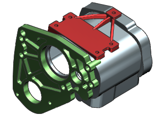
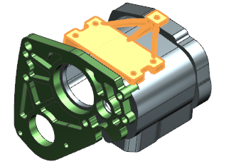

断开链接的面关系
-
打开 wav3_case_transmission。

-
在部件导航器中，右击链接部件模块 “Frame Mount”并选择全部展开。

-
查看部件导航器，注意到输出收集器中含有一个链接的面，它链接至 case_mount_1链接部件模块文件。
-
在链接部件模块仍然被选中时，选择格式→部件模块→打断关系。
链接将立即被打断，并且出现一个警报信息。
-
查看部件导航器，注意到输出收集器中含有一个断开的链接的面
 。
。